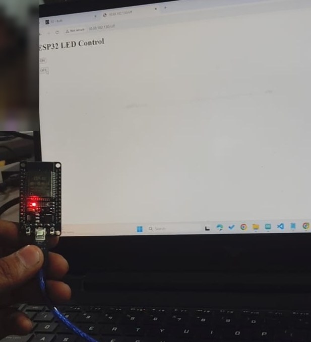
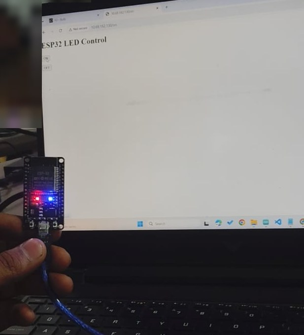
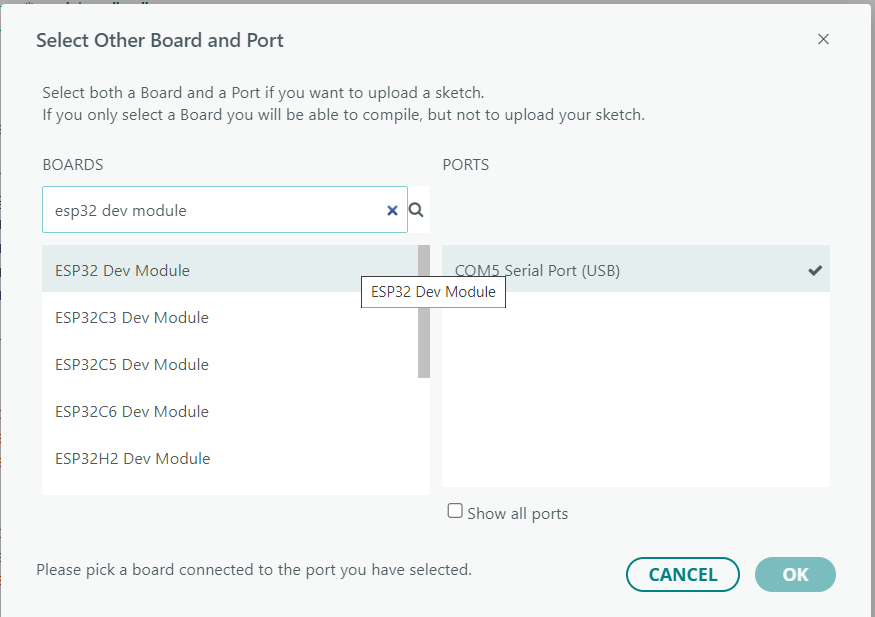
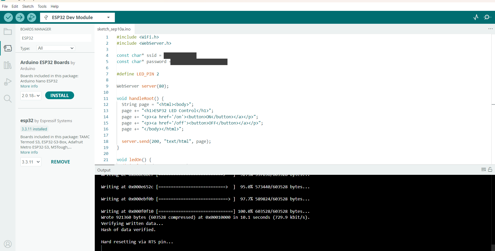
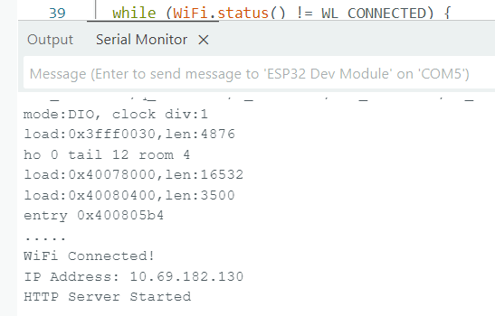
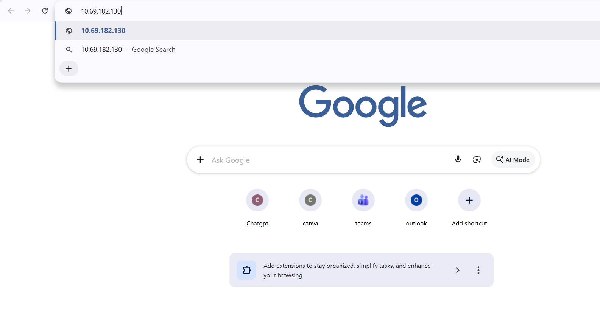
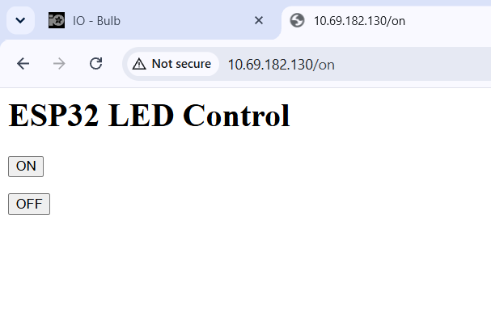
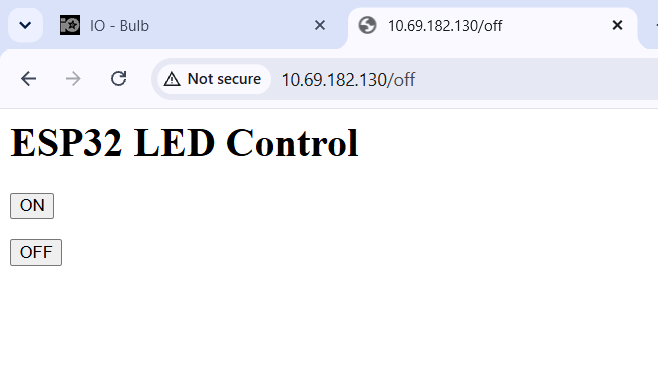

ESP32 Wi-Fi LED control with a web server
An ESP32 joins the local Wi-Fi, runs an HTTP server on port 80 and lets any browser on the network switch an LED on and off.
Abstract
This project controls an LED connected to an ESP32 from an ordinary web browser. The ESP32 is programmed in the Arduino IDE, connects to a Wi-Fi network, starts an HTTP server on port 80 and serves a simple control page with ON and OFF buttons. The screenshots below document the whole workflow: selecting the board and COM5 port, compiling and uploading the sketch, getting an IP address, starting the server and opening the page from a browser.
Objectives
- Set up the Arduino IDE for an ESP32 development board.
- Select the correct board and serial port for programming.
- Connect the ESP32 to a Wi-Fi network with an SSID and password.
- Configure GPIO 2 as the LED output.
- Create a lightweight HTTP server on port 80.
- Give the browser ON and OFF controls for the LED.
- Check that the upload and the network connection work.
- Check that the page is reachable at the ESP32’s local IP address.
Hardware and software
| Category | Item | Purpose |
|---|---|---|
| Hardware | ESP32 Dev Module | Wi-Fi microcontroller and web server |
| Hardware | USB cable | Programming, power and serial communication |
| Hardware | Onboard or external LED on GPIO 2 | The output being controlled |
| Software | Arduino IDE | Editing, compiling and uploading firmware |
| Software | ESP32 board package | Board definitions and toolchain |
| Software | Web browser | Client used to open the control page |
| Network | Wi-Fi access point or router | Provides the local network |
Program structure
- Libraries
WiFi.hfor Wi-Fi andWebServer.hfor the HTTP server. - CredentialsThe Wi-Fi name and password are stored as string constants.
- GPIO
LED_PINis defined as GPIO 2. - Server
WebServer server(80)creates an HTTP server on TCP port 80. - Root page
handleRoot()builds the “ESP32 LED Control” page with ON and OFF buttons. - ON and OFF handlers
ledOn()drives the LED HIGH andledOff()drives it LOW. Both return the control page. - Initialization
setup()starts Serial, sets GPIO 2 as an output, connects to Wi-Fi, prints the IP address, registers the routes and starts the server.
Circuit diagram
The onboard LED is already wired to GPIO 2, so the sketch works with no extra parts. For an external LED, connect GPIO 2 to a 220 Ω resistor, then to the LED anode, and connect the cathode to GND. At 3.3 V the current is around 6 mA, which is safe for the pin.
Hardware photos
The ESP32 connected to the laptop by USB while the control page is open in the browser. The red LED is the board’s power LED. The blue LED is the one on GPIO 2.

/off: only the red power LED is lit and the blue LED is off.
/on: the blue LED on GPIO 2 is lit next to the red power LED.Setup and upload
1. Select the board and port
With the ESP32 board package installed in the Arduino IDE, the board dialog was opened and ESP32 Dev Module was chosen with COM5. The IDE status bar then showed “ESP32 Dev Module on COM5”, so both the board and the upload port were set.

2. Compile and upload
The upload finished successfully. The output console shows the firmware written to flash up to 100%, followed by “Hash of data verified.” and “Hard resetting via RTS pin...”. That means the image was verified and the ESP32 restarted after programming. The Wi-Fi name and password in the editor are hidden in this screenshot.

Source code
#include <WiFi.h>
#include <WebServer.h>
const char* ssid = "YOUR_WIFI_NAME";
const char* password = "YOUR_WIFI_PASSWORD";
#define LED_PIN 2
WebServer server(80);
void handleRoot() {
String page = "<html><body>";
page += "<h1>ESP32 LED Control</h1>";
page += "<p><a href='/on'><button>ON</button></a></p>";
page += "<p><a href='/off'><button>OFF</button></a></p>";
page += "</body></html>";
server.send(200, "text/html", page);
}
void ledOn() {
digitalWrite(LED_PIN, HIGH);
handleRoot();
}
void ledOff() {
digitalWrite(LED_PIN, LOW);
handleRoot();
}
void setup() {
Serial.begin(115200);
pinMode(LED_PIN, OUTPUT);
digitalWrite(LED_PIN, LOW);
WiFi.begin(ssid, password);
while (WiFi.status() != WL_CONNECTED) {
delay(500);
Serial.print(".");
}
Serial.println("");
Serial.println("WiFi Connected!");
Serial.print("IP Address: ");
Serial.println(WiFi.localIP());
server.on("/", handleRoot);
server.on("/on", ledOn);
server.on("/off", ledOff);
server.begin();
Serial.println("HTTP Server Started");
}
void loop() {
server.handleClient();
}
The Wi-Fi name and password are placeholders. Put your own in your copy of the sketch and do not publish them.
Output
Wi-Fi and server start
After the reboot, the Serial Monitor prints the boot messages, then “WiFi Connected!”, the IP address and “HTTP Server Started”. The firmware ran, the ESP32 joined the network and the server is listening.

Opening the control page
The browser was pointed at the ESP32’s address, 10.69.182.130. The control page shows the heading “ESP32 LED Control” with ON and OFF buttons. Pressing them requests /on and /off, and the page comes back each time.



How it works
- ESP32 powers up and runs
setup(). - Serial communication starts for debugging and status messages.
- GPIO 2 is configured as an output for the LED.
- The ESP32 connects to the configured Wi-Fi network.
- It receives a local IP address (10.69.182.130 in the captured test).
- The HTTP server starts and listens on port 80.
- A browser sends a request to the ESP32.
- The root route returns the HTML page with ON and OFF controls.
- A request to
/ondrives GPIO 2 HIGH. - A request to
/offdrives GPIO 2 LOW. - The control page is returned again after each action.
Functional test results
| Test | Expected result | Observed evidence | Status |
|---|---|---|---|
| Board selection | ESP32 Dev Module and the correct COM port | IDE shows ESP32 Dev Module on COM5 | PASS |
| Compile and upload | Firmware compiled and uploaded | Write reached 100% and verification succeeded | PASS |
| Wi-Fi connection | ESP32 joins the configured Wi-Fi | Serial Monitor: WiFi Connected! | PASS |
| IP acquisition | ESP32 receives a LAN address | 10.69.182.130 displayed | PASS |
| HTTP server | Server starts on port 80 | HTTP Server Started displayed | PASS |
| Root web page | Control page loads | ESP32 LED Control page displayed | PASS |
| ON endpoint | Browser reaches the /on route | URL changes to /on and the page is returned | PASS |
| OFF endpoint | Browser reaches the /off route | URL changes to /off and the page is returned | PASS |
| LED response | The LED follows the buttons | Photos: blue LED lit at /on, off at /off | PASS |
Evidence summary
| Stage | Evidence | Figure |
|---|---|---|
| Board setup | ESP32 Dev Module and COM5 selected | 1 |
| Upload | Firmware written to flash and verified | 2 |
| Network | WiFi Connected, IP 10.69.182.130 | 3 |
| Web UI | Address entered in the browser; ESP32 LED Control page shown | 4, 5, 6 |
| ON action | /on endpoint reached | 5 |
| OFF action | /off endpoint reached | 6 |
| LED state | Blue LED lit at /on, off at /off | Hardware photos |
Results and discussion
The experiment shows a complete IoT control path. The ESP32 is both the controller and the HTTP server, and the browser is the client. No cloud platform is involved, because everything runs over the local Wi-Fi. The address is a private one, so the page can be reached only from devices on the same network.
The screenshots prove firmware upload, Wi-Fi connection, server start and access to the /on and /off endpoints. The hardware photos show the result on the board itself: the blue LED lights after /on and goes out after /off.
Advantages
- Simple and low cost.
- Uses the ESP32’s built-in Wi-Fi.
- Works from a normal web browser.
- No mobile app needed.
- Low overhead on a local network.
- Easy to extend to relays, motors and sensors.
Limitations and safety
- The page is basic HTML with no authentication.
- HTTP is not encrypted, so keep it off untrusted networks.
- Wi-Fi details are written in the source code. Fine for a lab demo, not for a product.
- The LED state was confirmed by eye in the photos, not measured with a meter.
- GPIO 2 should only drive suitable loads. Larger loads need a driver circuit.
- The IP address can change after reconnecting unless it is reserved.
Possible improvements
- Better interfaceAdd CSS and responsive buttons, and show the current LED state on the page.
- Clean redirectsRedirect to the root page after
/onand/off. - Reliable Wi-FiAdd a connection timeout and automatic reconnect.
- Access controlAdd authentication or local access control outside the lab.
- Safer credentialsUse a configuration step instead of hard-coding them.
- More outputsAdd controls for relays, motors or several LEDs.
- Sensor feedbackShow live measurements on the page.
- Easy addressUse mDNS so the device has a hostname instead of an IP.
Applications
- Home and lab IoT demonstrations
- Remote appliance switching with relays
- LED and lighting control
- Motor and actuator prototypes
- Embedded systems lab experiments
- Industrial monitoring and control prototypes
- Web-based sensor dashboards
In depth: how it really works
This section explains the project from the ground up: what happens on the network when you press a button, what every part of the sketch does, and why the design has the limits it has.
What happens when you press ON
- The browser builds a request. Clicking the ON button follows the link
/on. The browser opens a TCP connection to the ESP32’s IP address on port 80 and sendsGET /on HTTP/1.1. - The ESP32 receives it. Its network stack passes the bytes to the
WebServerlibrary. Nothing happens yet, because the library only works whenserver.handleClient()is called fromloop(). - The route is matched.
handleClient()reads the request line, finds the path/onin the table built byserver.on(...)and calls the function registered for it,ledOn(). - The pin changes.
digitalWrite(LED_PIN, HIGH)drives GPIO 2 to about 3.3 V. Current flows through the LED to ground and the LED lights. - A response goes back.
handleRoot()builds the HTML page andserver.send(200, "text/html", page)returns it with status 200 (OK). The browser draws the same page again, now at the address ending in/on. - The connection closes. The server keeps no memory of the request. The LED state lives only in the voltage on the pin.
The sketch, piece by piece
| Code | What it does and why |
|---|---|
#include <WiFi.h> | Brings in the ESP32 Wi-Fi functions: connecting to a router, reading the status and getting the IP address. |
#include <WebServer.h> | A small HTTP server for the ESP32. It parses requests and sends responses so the sketch does not have to handle raw sockets. |
const char* ssid / password | The network name and password, stored as text. Placeholders are shown on this page. Real values stay out of anything you publish. |
#define LED_PIN 2 | Names the pin. GPIO 2 drives the onboard LED on many ESP32 boards, which is why no extra parts are needed. |
WebServer server(80) | Creates the server object on port 80, the default port for HTTP. With port 80 the address needs no :port suffix. |
handleRoot() | Builds a short HTML page with two buttons inside links to /on and /off, then sends it. The page is assembled as a text string, so the whole interface lives inside the firmware. |
ledOn() / ledOff() | Set the pin HIGH or LOW, then call handleRoot() so the browser always receives a page back. Without a response the browser would wait and report an error. |
Serial.begin(115200) | Opens the USB serial link. The Serial Monitor must use the same 115200 baud rate or the text looks like random characters. |
pinMode(LED_PIN, OUTPUT) | Makes GPIO 2 an output, so the chip drives the pin instead of reading it. |
digitalWrite(LED_PIN, LOW) | Starts with the LED off, so the board has a known state at power-up. |
WiFi.begin(ssid, password) | Starts joining the router in station mode, which means the ESP32 acts like a phone or laptop on the network. |
while (WiFi.status() != WL_CONNECTED) | Waits, printing a dot every 500 ms, until the router has accepted the connection and assigned an address. The dots in the Serial Monitor are this loop running. |
WiFi.localIP() | The address the router’s DHCP server gave the ESP32. This is the address typed into the browser. |
server.on("/", ...) , "/on" , "/off" | Builds the route table: which function answers which path. A path that is not listed returns nothing useful. |
server.begin() | Starts listening for connections. Until this line runs, the ESP32 is on the network but not serving anything. |
server.handleClient() | Called over and over from loop(). It is the heartbeat of the program: each call checks for a waiting request and handles it. Long delay() calls in loop() would make the page slow to respond. |
Ideas behind the project
Client and server. The browser is the client and the ESP32 is the server. The client always starts the conversation. The ESP32 can never say “the state changed” on its own. This is called the request and response model.
Local network only. The address is a private one handed out by the router, so only devices on the same Wi-Fi can reach it. Reaching it from outside would need port forwarding or a tunnel, which also exposes the board to the internet. Tasks 2 and 3 solve this differently.
DHCP and a changing address. The router chooses the ESP32’s address and may give it a different one later. That is why the sketch prints the address at every start. A DHCP reservation on the router, or a fixed IP in the sketch, would keep it stable.
Why the resistor. A red LED drops about 2 V, so with a 3.3 V pin and a 220 Ω resistor the current is roughly (3.3 − 2.0) / 220 ≈ 6 mA. That lights the LED clearly and stays well within what a GPIO pin should supply. Without the resistor the current is limited only by the LED and the pin, which can damage either.
Safe to repeat. Opening /on twice has the same result as opening it once. Commands with this property are called idempotent, and they make remote control forgiving when a request is retried or the page is refreshed.
Limits of this approach
- The browser must ask each time, so the page does not update if the LED is changed elsewhere.
- There is no sign-in. Anyone on the same network who knows the address can switch the LED.
- Traffic is plain HTTP, so it is not encrypted.
- The interface is a string inside the firmware, so changing the look means re-uploading the sketch.
These limits are the reason the next task moves to MQTT, where the device keeps a connection open and the cloud pushes commands to it.
Conclusion
The ESP32 Wi-Fi LED control experiment was implemented and verified. The evidence shows the right board and port, a successful upload and verification, Wi-Fi connection, an IP address, the HTTP server starting, and the browser reaching the ON and OFF endpoints. It is the basic design of a local-network IoT device and a good base for the next tasks.